current-release-svg-widths
Publication-safe human-review contact sheet. Screenshots use the same contained-scroll frame treatment as the repaired site figures.
Evidence status layers
assets/figures/evidence-status-layers.svg
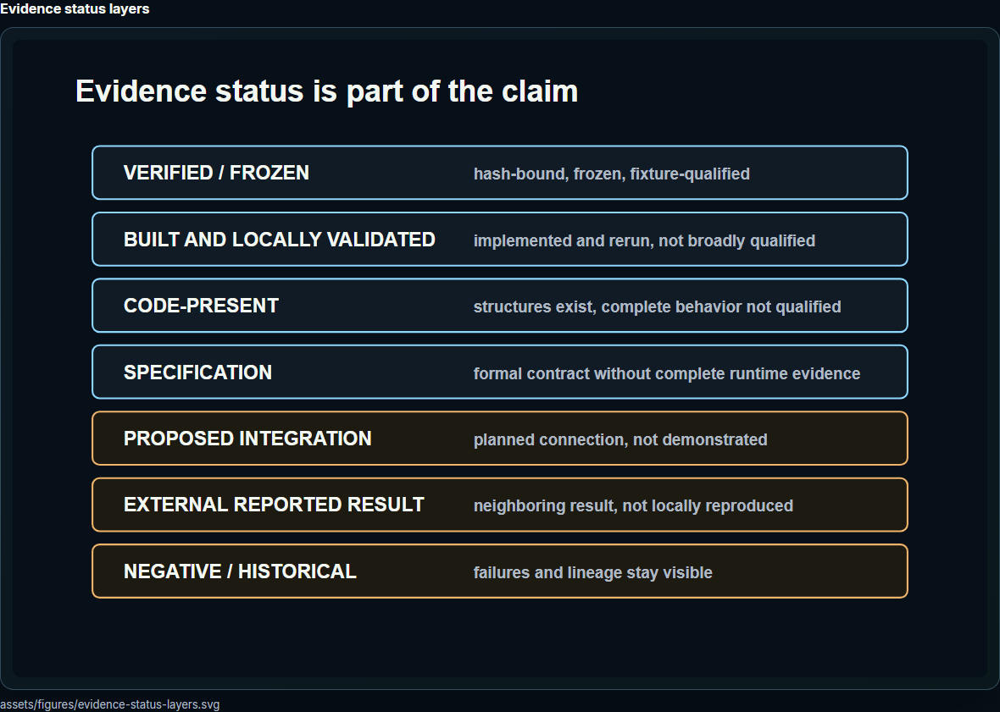
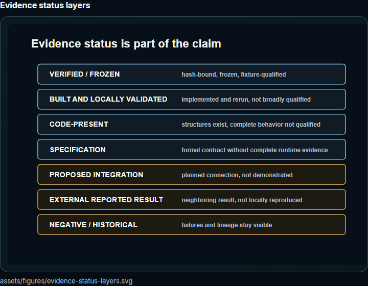
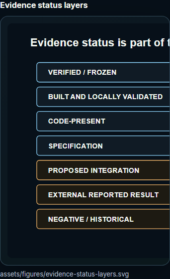
From finite observer to persistent observer
assets/figures/finite-to-persistent-observer.svg
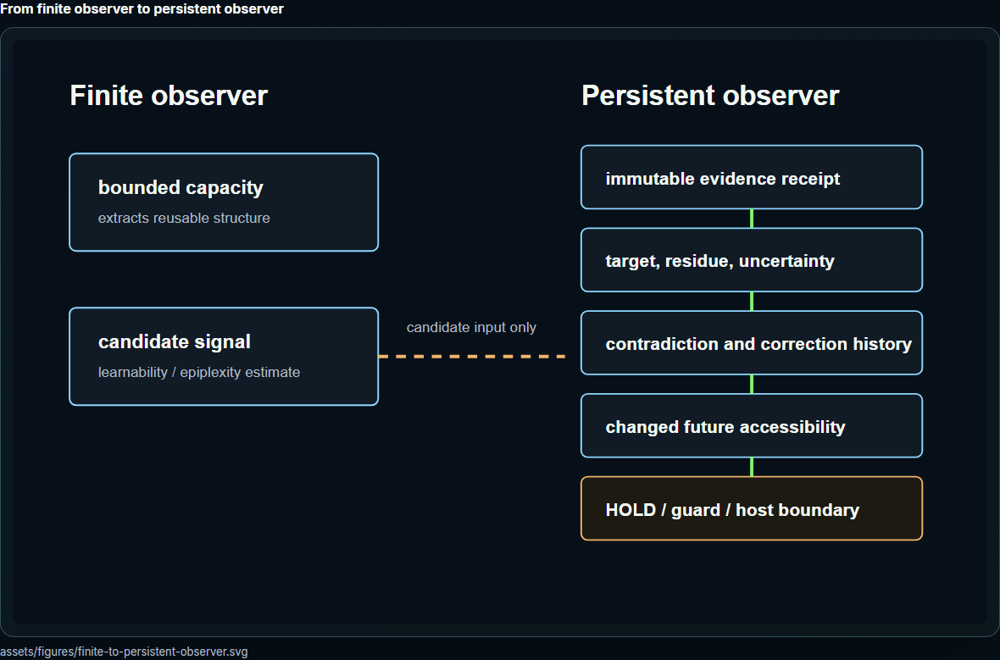
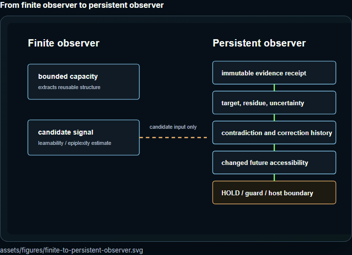
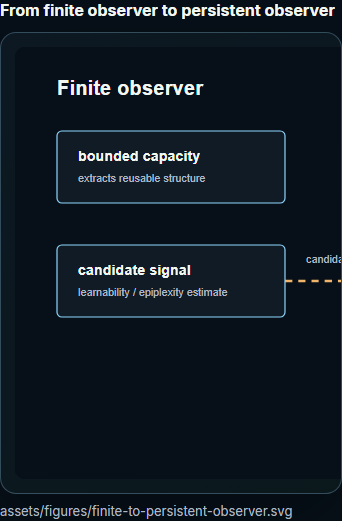
Host authority boundary
assets/figures/host-authority-boundary.svg
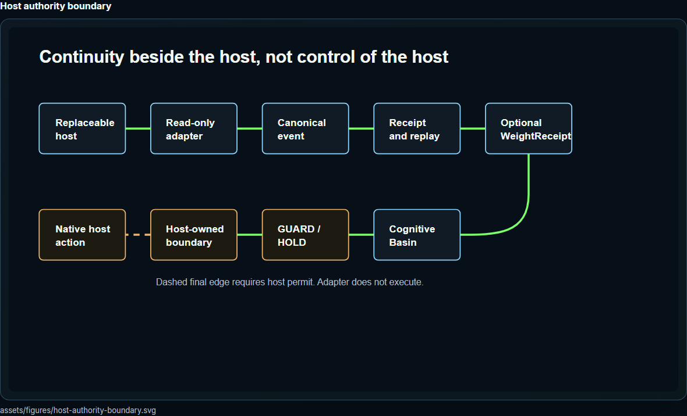
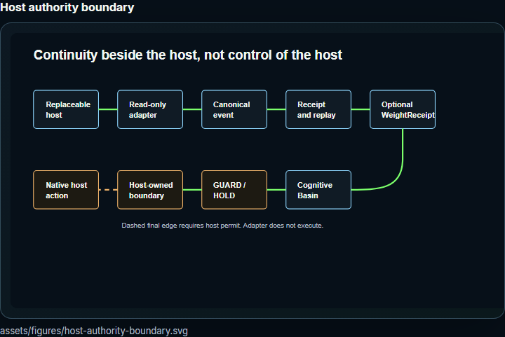
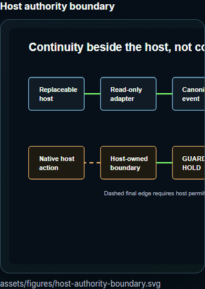
Metric versus persistent observer
assets/figures/metric-versus-observer.svg
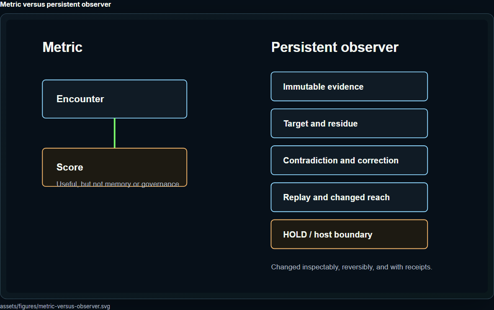
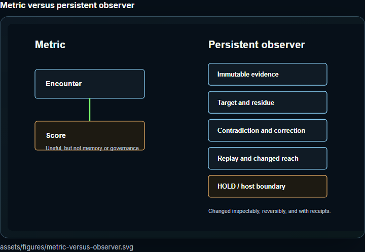
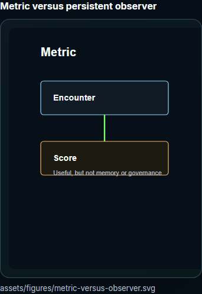
Natural Math version authority
assets/figures/natural-math-version-authority.svg
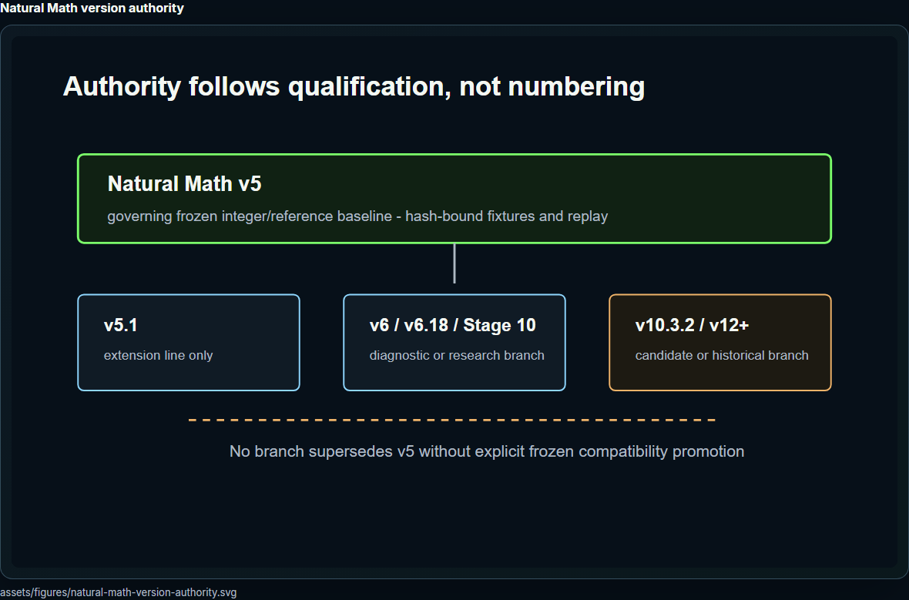
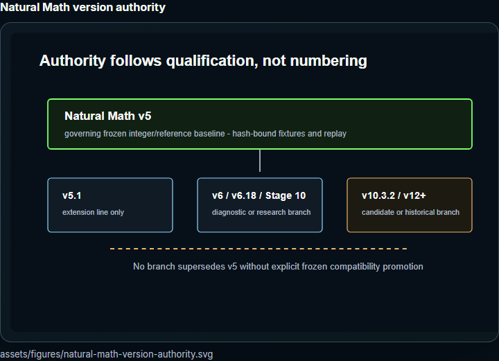
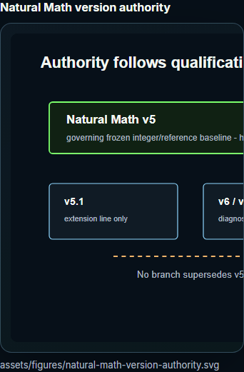
Persistent observer proposed experiment
assets/figures/persistent-observer-experiment.svg
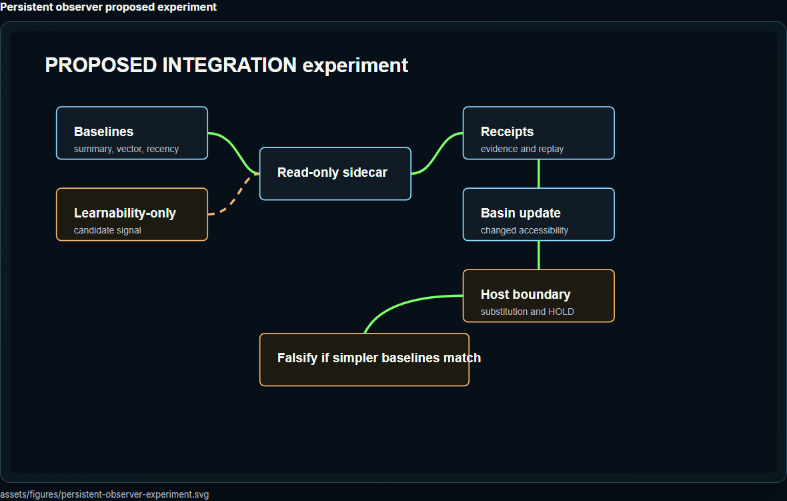
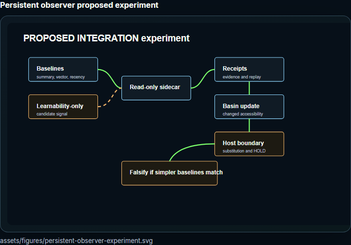
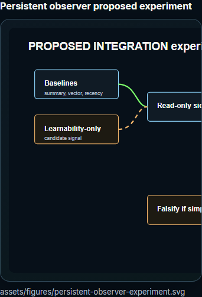
Persistent observer target integration architecture
assets/figures/persistent-observer-stack.svg
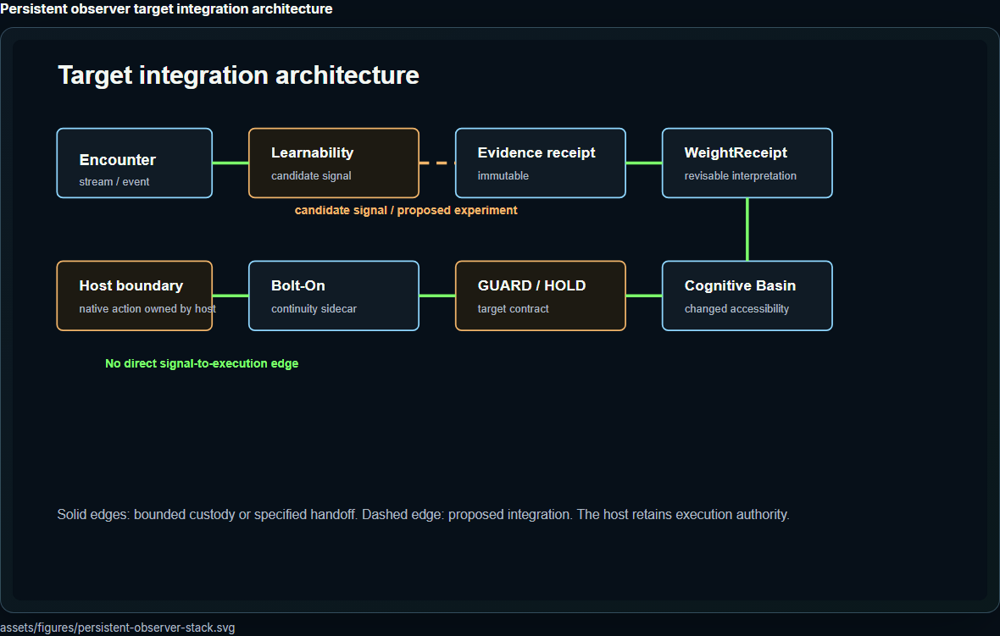
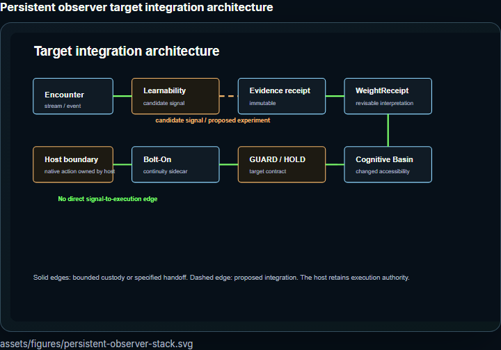
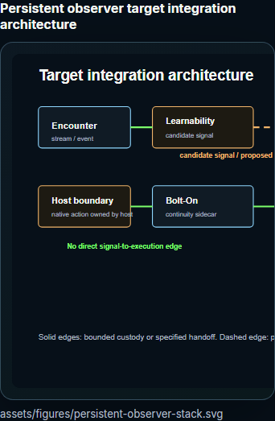
WeightReceipt anatomy
assets/figures/weight-receipt-anatomy.svg
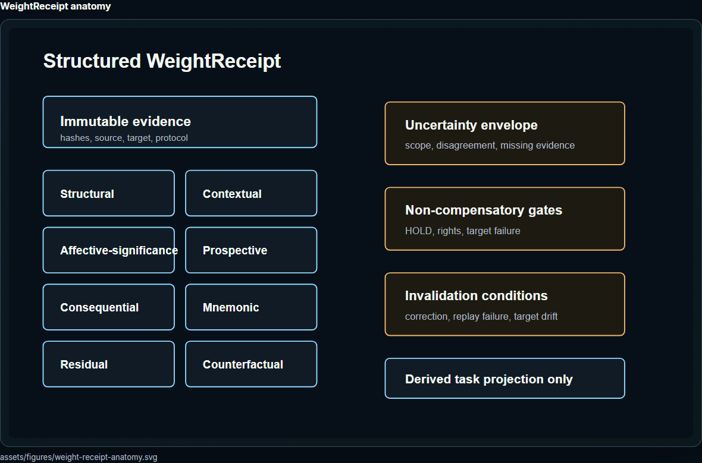
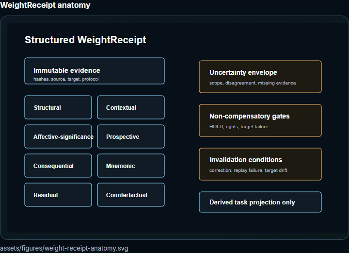
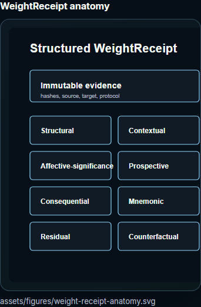